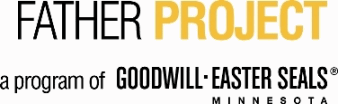

African American Family Services
Services
Pre Deployment »
Wellness Checks »
Mission Support »
Post Deployment »
Support Resources »
Our Wellness Services »
PARTNERS
Minnesota Recovery Connection
Peer-to-Peer Recovery Support Programs
Recovery Coaching
MRC offers peer-to-peer recovery support through our Recovery Coaching program. Volunteers are matched with individuals seeking recovery to offer on-going weekly support to help remove barriers and help enhance and sustain recovery. For information on receiving telephone support or being a Telephonic Recovery Coach contact:
Monique Bourgeois
Volunteer/Training Coordinator
651.233.2080 ext. 21
monique@minnesotarecovery.org
Telephone Recovery Support
This peer-to-peer recovery support program is similar to the Recovery Coaching program, except that it is limited to phone support. Volunteers reach out over the phone to individuals seeking recovery in order to connect them to the resources they need to achieve and maintain recovery. For information on receiving telephone support or being a Telephonic Recovery Coach contacts us at:
P: 651.233.2080
F: 651.294.8949
info@minnesotarecovery.org
Minnesota Narcotics Anonymous Meetings
NA offers addicts a way to live drug-free. If you are not sure you're an addict, don't worry about it; just keep coming to our meetings. You will have all the time you need to make up your own mind.

Goodwill's Father Project
Goodwill/Easter Seals Minnesota's FATHER Project is designed for metro area fathers, who are low-income, non-custodial dads to assist them in becoming more involved in their children’s lives.
AlcoholScreening.org
AlcoholScreening.org is a free service of Join Together, a project of the Boston University School of Public Health. AlcoholScreening.org helps individuals assess their own alcohol consumption patterns to determine if their drinking is likely to be harming their health or increasing their risk for future harm. Through education and referral, the site urges those whose drinking is harmful or hazardous to take positive action, and informs all adults who consume alcohol about guidelines and caveats for lower-risk drinking.
MinnesotaChoice.com
MNCHOICE enables victims and advocates to not only request notification for offenders incarcerated at a MNDOC facility, but also to manage what information they receive and how they receive it.
Lydia Newlin, M.A.
Program Director, Victim Assistance & Restorative Justice Program
Minnesota Department of Corrections
1450 Energy Park Drive, Suite 200
St. Paul, MN 55108
651.361.7249
lydia.newlin@state.mn.us
MinnesotaHelp.info
MinnesotaHelp.info is an online directory of services designed to help people in Minnesota find human services, information and referral, financial assistance, and other forms of help. It is especially rich in resource information for seniors and their caregivers; people with disabilities and their caregivers; parents and families; and low income people.
LawHelpMN.org
Minnesota Legal Services Coalition (MLSC)
MLSC is an association of legal services programs in Minnesota that help low-income people with a broad range of civil legal matters. If you have heard of the "legal aid office" in your community, it is probably part of MLSC. MLSC helps create and distribute key information to the public through fact sheets, booklets, and manuals. To reach the LawHelpMN.org liaison at MLSC, email statesupport@mnlegalservices.org.
Probono.net
Probono.net is a unique collaboration among the various parts of the public interest legal community, organized primarily in New York city. They use information technology to increase the amount and quality of legal services provided to low-income individuals and communities. Probono.net staff can be reached at info@probono.net.
Minnesota State Bar Association (MSBA)
The Minnesota State Bar Association (MSBA) is a voluntary organization of Minnesota legal professionals. The MSBA and its affiliated sections and district bar associations provide numerous programs and services for members, the legal profession and the community.
Legal Services Corporation (LSC)
The Legal Services Corporation (LSC) is a private, non-profit corporation established by Congress to seek to ensure equal access to justice under the law for all Americans by providing civil legal assistance to those who otherwise would be unable to afford it. LSC was created in 1974 with bipartisan congressional sponsorship and the support of the Nixon administration, and is funded through congressional appropriation.